Study J02 as a complete chapter: models and assumptions → derivations → solved controls → refinements → one comprehensive calculation. The cavity/source history is supplied here; laser absorption and PFC thermodynamics enter after J04. Ask about any step that is unclear.
将 J02 作为完整章节学习：模型与假设 → 推导 → 已解对照 → 改进 → 一道综合计算。本阶段给定腔体／源历程；激光吸收与 PFC 热力学在 J04 之后引入。任何不清楚的步骤均可继续提问。
Goal: close a spatial jet-formation problem, recover the spherical limit to verify signs, and derive a focusing benchmark that obeys both continuity and energy.
目标：闭合空间射流形成问题，通过球形极限核验符号，并推导同时满足连续性与能量的聚焦对照。
1 · Radius is insufficient once the interface develops a jet
1 · 界面产生射流后，仅有半径不够
J01 supplied total work and a preferred direction. Now replace a single radius by the full liquid domain and its moving boundary. A liquid finger can enter a gas cavity while the cavity’s equivalent radius still decreases smoothly. Another geometry can eject liquid through an exterior meniscus before the cavity collapses. Both are jets, but they involve different interfaces and event order. Their governing fields are velocity, pressure and interface position; the interface shape must be solved rather than assigned from a radius equation.
J01 提供了总做功与优先方向。现在用完整液体区域及其运动边界替代单一半径。液体指状结构可进入气腔，同时腔体等效半径仍平滑减小；另一种几何可在腔体塌缩前通过外弯液面喷出液体。两者均为射流，但涉及不同界面及事件顺序。支配场为速度、压力与界面位置；应求解界面形状，而不是从半径方程指定。
Begin with an inviscid, incompressible liquid that has zero vorticity initially and no mechanism generating bulk vorticity during this stage. A velocity potential then reduces the bulk equations to a harmonic boundary-value problem. This reduction is particularly useful during inertial shape development. No-slip boundary layers, viscous dissipation, phase-change mass flux and shocks require later refinements; their absence is an explicit assumption of this benchmark.
先取初始无旋、且这一阶段没有产生体内涡量机制的无黏不可压缩液体。速度势可将体内方程化为调和边值问题，这在惯性主导的形状发展阶段尤为有用。无滑移边界层、黏性耗散、相变质量通量与激波需要后续改进；省略它们是本对照的明确假设。
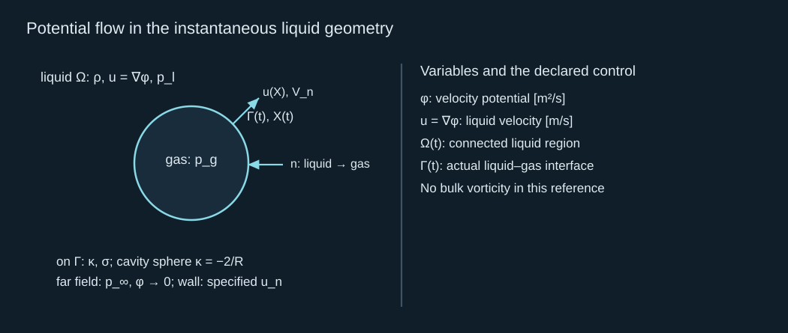
Potential flow in the instantaneous liquid geometry
瞬时液体几何中的势流
The Laplace equation solves the instantaneous velocity field; it does not evolve the shape by itself. The moving interface supplies the missing time evolution. Every surface point travels with the liquid normal velocity in a material-interface control. Tangential movement may reparameterize a numerical surface, but it must not change the physical normal movement. Specify a consistent normal before writing pressure and curvature signs.
Laplace 方程求解瞬时速度场，但自身并不推进形状。运动界面提供缺失的时间演化。材料界面对照中，每个表面点沿液体法向速度运动。切向运动可以重新参数化数值表面，但不能改变物理法向运动。写压力和曲率符号之前必须指定一致法向。
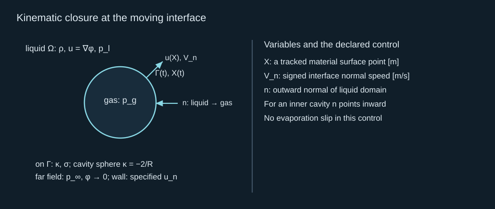
Kinematic closure at the moving interface
运动界面的运动学闭合
2 · Derive the dynamic condition and verify it against Rayleigh–Plesset
2 · 推导动力学条件，并用 Rayleigh–Plesset 核验
For constant surface tension and a massless inviscid interface, normal stress gives the liquid pressure in terms of gas pressure and signed curvature. Here curvature is surface divergence of the liquid-to-gas normal. An inner spherical cavity has negative curvature; an exterior cylindrical jet has positive curvature. Reversing the normal without reversing curvature would reverse the capillary effect and spoil the spherical limit.
恒定表面张力、无质量无黏界面中，法向应力通过气压及带符号曲率给出液压。这里曲率是液体指向气体法向的表面散度。内部球形腔体曲率为负，外部圆柱射流曲率为正。若翻转法向而不翻转曲率，就会颠倒毛细作用并破坏球形极限。
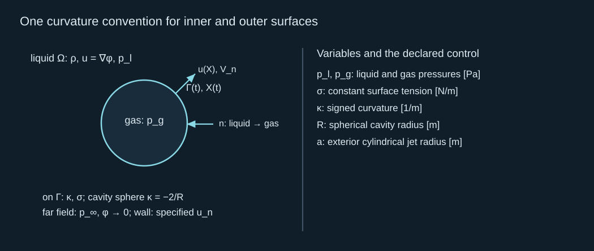
One curvature convention for inner and outer surfaces
内外表面使用同一曲率约定
Integrate the inviscid momentum equation in space for an irrotational flow. The integration constant is fixed by liquid at rest far away, with zero far-field potential and pressure equal to the ambient value. We omit gravity over this short stage. This gives an Eulerian time derivative at a fixed location. The quantity stored on a moving interface instead needs the material derivative; adding velocity dotted with the potential gradient changes the sign of the kinetic term.
对无旋流动，将无黏动量方程作空间积分。远处液体静止、势为零、压力为环境值，从而确定积分常数。短暂阶段省略重力。所得时间导数是在固定位置的 Euler 导数；运动界面上存储的量则需要材料导数。加上速度与势梯度的点积，会改变动能项的符号。
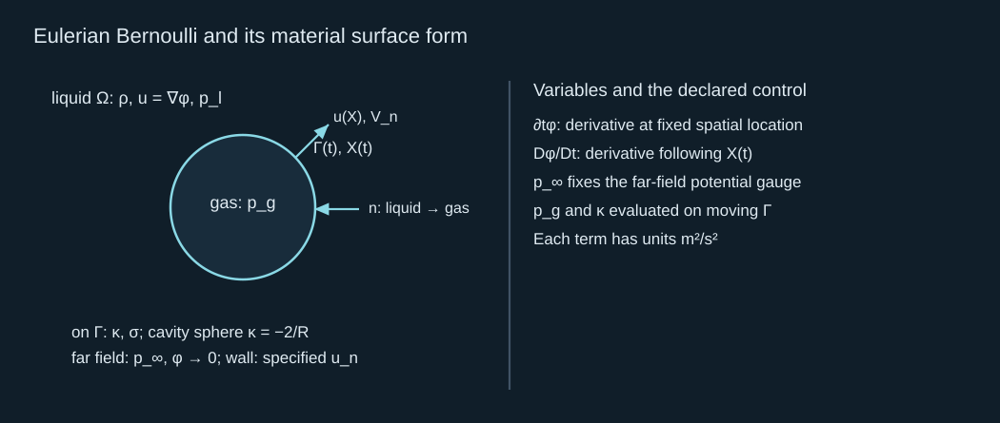
Eulerian Bernoulli and its material surface form
Euler 型 Bernoulli 与材料表面形式
Check the signs with a sphere. The radial velocity field integrates to a potential that decays at infinity. Evaluate the potential at the moving radius and differentiate along that moving surface. Substitute negative cavity curvature into the dynamic equation. The familiar inviscid Rayleigh–Plesset equation follows with a resisting capillary term. This is a strong verification: the spatial formulation reduces to the already understood radial model when the geometry is spherical.
用球形检查符号。径向速度场积分为远处衰减的势，在运动半径上求其值，再沿运动表面求导。将负的腔体曲率代入动力学方程，会得到熟悉的无黏 Rayleigh–Plesset 方程，其中毛细项阻碍膨胀。这个核验很有力：几何为球形时，空间表述还原为已理解的径向模型。
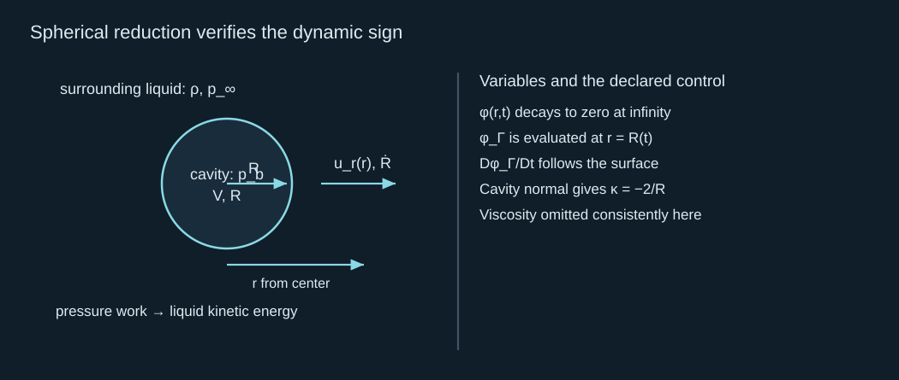
Spherical reduction verifies the dynamic sign
球形还原核验动力学符号
3 · Close the spatial problem with boundary data, then evolve it
3 · 用边界数据闭合空间问题，再推进演化
Green’s identity converts the harmonic bulk problem into an integral over its boundary. At a smooth point on that boundary, the geometrical coefficient is one half. The kernel is the three-dimensional Laplace fundamental solution. Both values and normal derivatives appear: if the surface potential is known, the integral problem determines the unknown normal derivative, and hence the interface speed. Solid boundaries and any other free surface belong to the same domain description.
Green 恒等式把调和体内问题转为边界积分。光滑边界点上的几何系数为二分之一；核函数为三维 Laplace 基本解。式中同时出现函数值与法向导数：已知表面势时，积分问题确定未知法向导数，进而确定界面速度。固体边界及其他自由表面都属于同一区域描述。
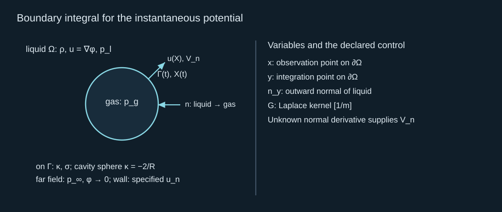
Boundary integral for the instantaneous potential
瞬时势的边界积分
A closed model therefore supplies the initial interface shape and surface potential, a gas-pressure law or prescribed pressure history, surface tension, the actual wall or free-surface conditions and a far-field condition. One possible gas closure uses its current volume and a specified polytropic law; a supplied pressure history is another legitimate mechanical control. Choosing that control defers source thermodynamics but still allows the entire formation calculation. No jet diameter needs to be imposed: it emerges from the computed interface.
因此，闭合模型要给出初始界面形状与表面势、气压规律或规定的压力历程、表面张力、实际壁面或自由表面条件及远场条件。一种气体闭合使用当前体积和规定的多方规律；给定压力历程也是合法力学对照。采用这种对照只是把源热力学延后，仍可进行完整的形成计算。无需强行指定射流直径：它由计算界面产生。
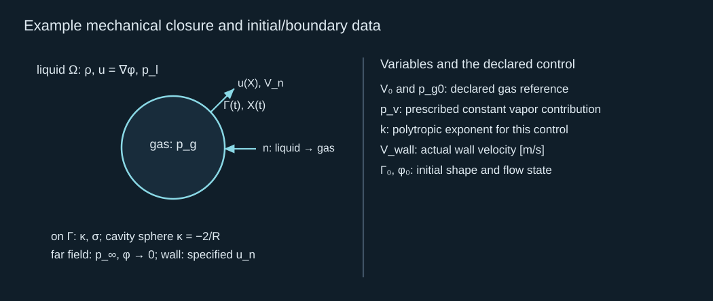
Example mechanical closure and initial/boundary data
示例力学闭合与初始／边界数据
At each time, solve the boundary integral, evaluate the kinematic speed, and advance both shape and surface potential using the material dynamic condition. Test this evolution against the exact spherical reduction before trusting asymmetrical jets. Boundary resolution must be sufficient at the narrowing tip, and time resolution must follow the rapid acceleration. Conservation of liquid volume and mechanical energy provides further tests. An interface can converge globally while its smallest tip and maximum speed remain unresolved.
每个时刻先解边界积分，评价运动学速度，再通过材料动力学条件推进形状和表面势。信任不对称射流之前，应先用精确球形还原检验演化。边界分辨率要足以解析变细尖端，时间分辨率要跟随快速加速。液体体积和机械能守恒提供进一步检验。即使整体界面收敛，最小尖端和最大速度仍可能未解析。
The potential-flow calculations in Supponen et al. are useful examples of this formation stage. When the liquid tip hits the opposite cavity surface, the topology changes: a single simply connected cavity can become toroidal. That event needs a topology treatment, and its impact wave needs compressibility. The pre-impact shape problem and the post-impact pressure problem are successive models with matched state and energy, not one interchangeable equation.
Supponen 等 的势流计算是这一形成阶段的有用实例。液体尖端撞击对侧腔体表面时，拓扑会改变：单一单连通腔体可变成环状。该事件需要拓扑处理，冲击波需要可压缩性。冲击前形状问题与冲击后压力问题应匹配状态和能量，属于相继模型，不能用一个可互换方程代替。
4 · Solve a nonuniform impulse field in a declared corner geometry
4 · 在声明的角部几何中求解非均匀冲量场
A two-dimensional liquid sector provides an exactly soluble spatial control. Take polar radius and angle about its vertex. One straight side is impermeable, the other is pressure releasing, and the circular outer boundary has the explicitly prescribed angular impulse below. Separate variables in Laplace’s equation. The normal derivative vanishes on the solid side, while the field itself vanishes on the free side. These mixed conditions set the radial exponent.
二维液体扇区提供一个可精确求解的空间对照。以顶点为原点取极径与角度。一条直边不透，另一条为压力释放边，圆形外边界具有下式明确规定的角向冲量。在 Laplace 方程中分离变量：固体边上法向导数为零，自由边上场本身为零。混合条件决定径向指数。
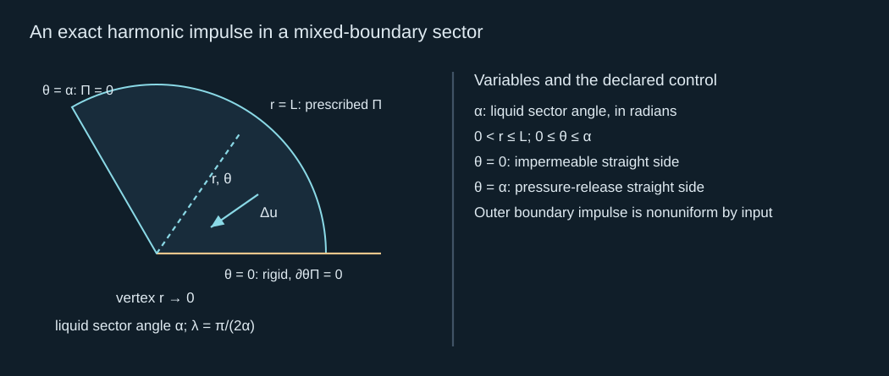
An exact harmonic impulse in a mixed-boundary sector
混合边界扇区中的精确调和冲量
Differentiate this field to obtain the velocity increment. The radial and angular components combine to a magnitude independent of angle for this particular harmonic mode. For a sector wider than a right angle, the exponent is less than one and the mathematical speed rises toward the vertex. This is a genuine geometric concentration of a solved pressure-impulse gradient, rather than an assumed area-gain factor. The source boundary is prescribed as shown; it is not a claim that any uniform pulse produces this field.
对场求导得到速度增量。对这一特定调和模式，径向与角向分量合成的大小与角度无关。扇区大于直角时，指数小于一，数学速度向顶点升高。这是已解压力冲量梯度的实际几何集中，而不是假定面积增益因子。源边界按所示规定，并非声称任意均匀脉冲都会产生这个场。
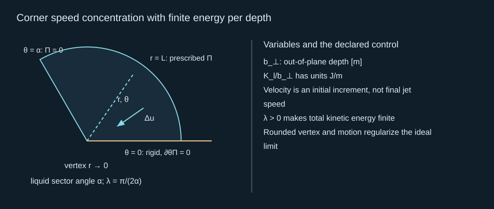
Corner speed concentration with finite energy per depth
角部速度集中与有限单位深度能量
At sector angle 120 degrees the exponent is three quarters. With outer radius 100 μm, impulse scale 0.30 Pa s and density 1,000 kg/m³, speed increment is 2.25 m/s at the outer arc and 7.11512 m/s at one percent of that radius. Integrated energy per depth stays finite at 3.53429×10⁻⁵ J/m. A physical rounded vertex, interface displacement or compressibility changes the local limiting solution. The calculated initial concentration must still be propagated through the moving-interface equations before it becomes a jet prediction.
扇区角为 120 度时，指数为四分之三。外半径 100 μm、冲量尺度 0.30 Pa s、密度 1,000 kg/m³ 下，外圆弧速度增量为 2.25 m/s，在外半径百分之一处为 7.11512 m/s。积分单位深度能量仍有限，为 3.53429×10⁻⁵ J/m。真实顶点圆角、界面位移或可压缩性会改变局部极限解。计算的初始集中还需通过运动界面方程继续传播，才构成射流预测。
This control closes a key part of the focusing argument: a specified geometry and boundary forcing determine a spatial velocity field, which can be highly nonuniform while obeying finite energy. It does not prescribe a permanent sharp corner after the free surface moves. The distinction between a solved initial field and the later nonlinear shape evolution is why the formation model retains both kinematic and dynamic interface conditions.
该对照完成聚焦论证中的关键一步：指定几何与边界驱动决定空间速度场，后者可以很不均匀，同时满足有限能量。但它不规定自由表面运动后仍保留永久尖角。已解初始场与后续非线性形状演化的区别，正是形成模型同时保留界面运动学及动力学条件的原因。
5 · Derive a focusing control that also pays its energy cost
5 · 推导同时支付能量代价的聚焦对照
Before solving a freely moving meniscus, use a stationary nozzle as an exact bookkeeping benchmark. Let a solid inlet tube feed a cylindrical free liquid jet. The flow is steady, incompressible and uniform at the two chosen cross-sections. Conservation of liquid volume makes velocity increase as area decreases. That relation alone says nothing about whether the required flow can be maintained; the pressure source must also supply the kinetic and surface-pressure rise.
求解自由运动的弯液面之前，先用固定喷嘴作为精确核算对照。设固体入口管供应圆柱自由液体射流，两选定截面上的流动稳态、不可压缩且均匀。液体体积守恒使速度在面积减小时增大。但仅有该关系无法说明所需流量是否能够维持；压力源还必须提供动能与表面压力的增加。
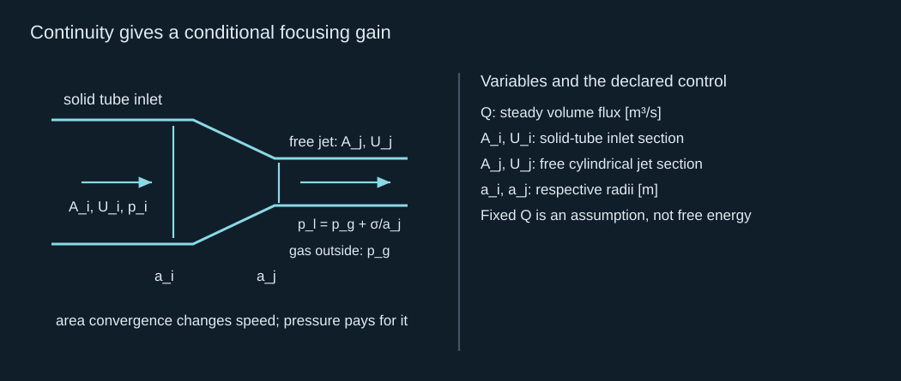
Continuity gives a conditional focusing gain
连续性给出有条件聚焦增益
Apply Bernoulli between those same liquid cross-sections. At the cylindrical exterior surface, the liquid is above surrounding gas pressure by the cylindrical Laplace pressure. At the inlet, pressure is a measured liquid pressure in a solid tube, so there is no inlet liquid–gas curvature term. Add irreversible losses as a nonnegative pressure requirement. In a transient focusing jet, local unsteadiness and storage must be retained instead of using this steady relation.
在相同两个液体截面之间应用 Bernoulli。圆柱外表面处，液体比周围气体高一个圆柱 Laplace 压力；入口压力是固体管内的实测液体压力，没有入口液气曲率项。不可逆损失作为非负压力需求加入。瞬态聚焦射流必须保留局部非定常及储存项，不能直接使用稳态关系。
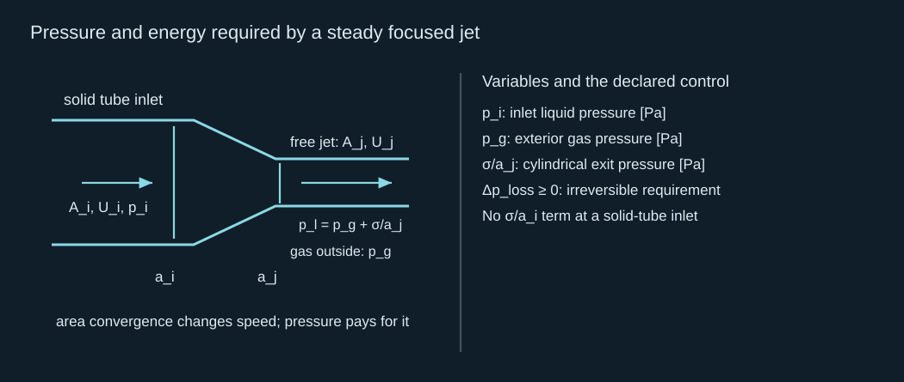
Pressure and energy required by a steady focused jet
稳态聚焦射流所需压力与能量
For inlet radius 40 μm and jet radius 10 μm, an inlet speed of 3 m/s implies 48 m/s at the exit. With density 1,000 kg/m³ and surface tension 0.072 N/m, even a lossless nozzle needs 1.1547 MPa above gas pressure. The factor-of-sixteen velocity gain is therefore a geometric consequence of a maintained flow, paid for by a substantial pressure supply. Carrying the 3 m/s impulse-column result from J01 into this nozzle without the extra driving pressure would violate the energy equation.
入口半径 40 μm、射流半径 10 μm 时，入口速度 3 m/s 对应出口 48 m/s。密度 1,000 kg/m³、表面张力 0.072 N/m 下，即使无损喷嘴也需比气压高 1.1547 MPa。十六倍速度增益是维持流量时的几何结果，需要显著压力供给支付代价。若把 J01 的 3 m/s 冲量液柱结果直接带入此喷嘴，却不提供额外驱动压力，就违反能量方程。
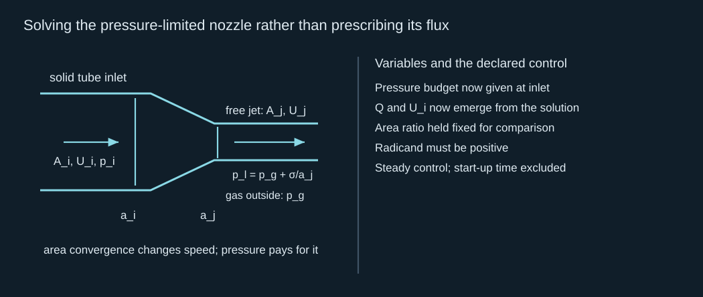
Solving the pressure-limited nozzle rather than prescribing its flux
求解限压喷嘴，而不是规定其流量
If the same nozzle receives only 0.20 MPa above exterior gas pressure, the lossless exit speed is 19.6752 m/s and inlet speed is 1.22970 m/s. This positive result is more informative than an isolated warning: it gives the attainable flow in the stated benchmark. A smaller area can increase speed for a supplied flux, or alter flux under a supplied pressure. Always declare which quantity the source actually controls.
若相同喷嘴仅得到比外部气压高 0.20 MPa 的供给，无损出口速度为 19.6752 m/s，入口为 1.22970 m/s。这个正面结果比单独提醒更有信息：它给出声明对照中的可达流动。供给流量固定时，面积更小可提高速度；供给压力固定时，也可能改变流量。必须说明源实际控制哪个量。
6 · From the nozzle control to a freely evolving meniscus
6 · 从喷嘴对照到自由演化弯液面
A curved free surface changes the spatial solution of pressure impulse and the subsequent potential flow. Normals on a concave meniscus can direct motion toward an axis; neighboring surface material then converges, forming a narrow tip. This is transient geometric focusing, not a fixed-area nozzle identity. To calculate it, solve the initial impulse field in the actual geometry, use its gradient to initialize the velocity potential, and evolve the moving interface with the equations above. The growing cavity and outer meniscus must both be included if they share the liquid domain.
弯曲自由表面改变压力冲量的空间解及后续势流。凹弯液面的法向可将运动指向轴，邻近表面材料随后汇聚，形成细尖端。这是瞬态几何聚焦，不是固定面积喷嘴恒等式。计算时应在实际几何中求初始冲量场，通过其梯度初始化速度势，再按上述方程演化运动界面。若生长腔体与外弯液面共享液体区域，两者都必须纳入。
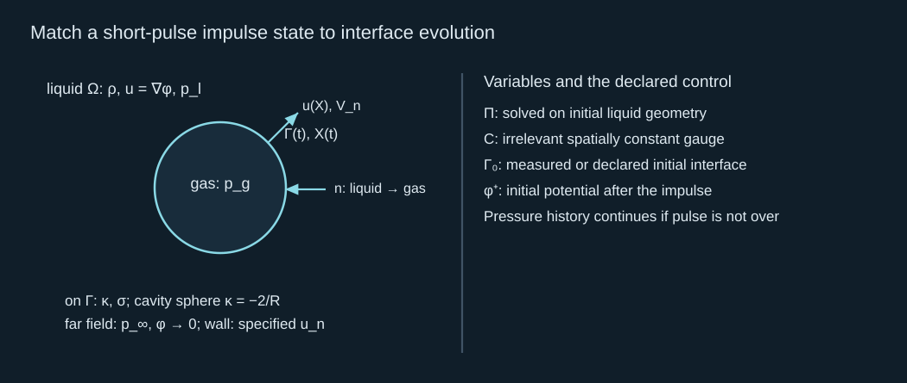
Match a short-pulse impulse state to interface evolution
将短脉冲冲量状态匹配到界面演化
This two-stage construction supplies a theoretical chain for formation: boundary forcing → spatial impulse → velocity potential → interface evolution → resolved tip speed and cross-section. If the pulse lasts while the surface moves significantly, use a time-dependent pressure boundary rather than frozen-geometry impulse initialization. Tagawa et al. (2012) supplies a geometry-specific focused-exit example. It motivates testing meniscus geometry, but its tube result does not calibrate a different stamp. Once the jet leaves its formation region, J03 asks how much of it survives to the receiver.
这个两阶段构造提供了形成的理论链：边界驱动 → 空间冲量 → 速度势 → 界面演化 → 已解析尖端速度与截面。若脉冲期间表面已显著运动，应使用时间变化的压力边界，而不是冻结几何的冲量初始化。Tagawa 等（2012） 提供了依赖几何的聚焦出口实例，说明弯液面几何值得检验，但其管道结果不校准不同印章。射流离开形成区后，J03 将研究其到达接收体前能保留多少。
Comprehensive calculation · verify signs, then close the focusing budget
综合计算 · 先核验符号，再闭合聚焦预算
Use liquid density 1,000 kg/m³ and surface tension 0.072 N/m. The spherical control has radius 50 μm, inward wall speed −20 m/s, gas pressure 2 kPa and ambient pressure 100 kPa; neglect viscosity. The steady solid-tube nozzle has inlet radius 40 μm and free-jet radius 10 μm. Work through the following parts with the same pressure convention.
取液体密度 1,000 kg/m³、表面张力 0.072 N/m。球形对照半径 50 μm、向内壁速 −20 m/s、气压 2 kPa、环境压力 100 kPa，忽略黏性。稳态固体管喷嘴入口半径 40 μm、自由射流半径 10 μm。以下各部分使用相同压力约定。
1. Calculate liquid pressure at the cavity wall, signed normal velocity and radial acceleration.
1. 计算腔壁液体压力、带符号法向速度和径向加速度。
Reference 1 · normal and curvature / 参考 1 · 法向与曲率
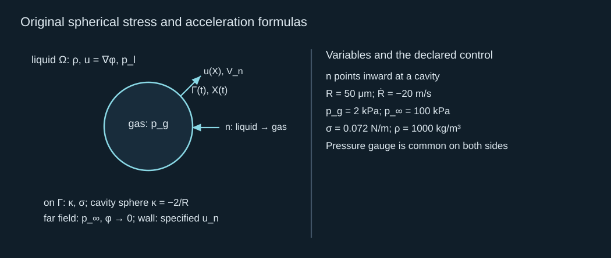
Original spherical stress and acceleration formulas
球形应力与加速度的原始公式
Capillary pressure is 2.88 kPa, so liquid pressure at the interface is −0.88 kPa in the specified common gauge. The signed normal speed is +20 m/s because the normal points inward. The net radial pressure term is −100.88 kPa and radial acceleration is −1.40176×10⁷ m/s². Acceleration reinforces the inward motion. This ideal tensile liquid state is part of the declared control, not a metastability guarantee.
毛细压力为 2.88 kPa，因此界面液体压力在所规定共同基准下为 −0.88 kPa。因为法向向内，带符号法向速度为 +20 m/s。径向净压力项为 −100.88 kPa，径向加速度为 −1.40176×10⁷ m/s²，加速加强向内运动。这一理想受拉液态属于声明对照，并不保证亚稳态可维持。
2. Calculate surface potential and its material derivative two ways. Why is using an Eulerian derivative on the moving surface wrong?
2. 以两种方法计算表面势及其材料导数。为什么直接在运动表面使用 Euler 导数不对？
Reference 2 · spherical sign verification / 参考 2 · 球形符号核验
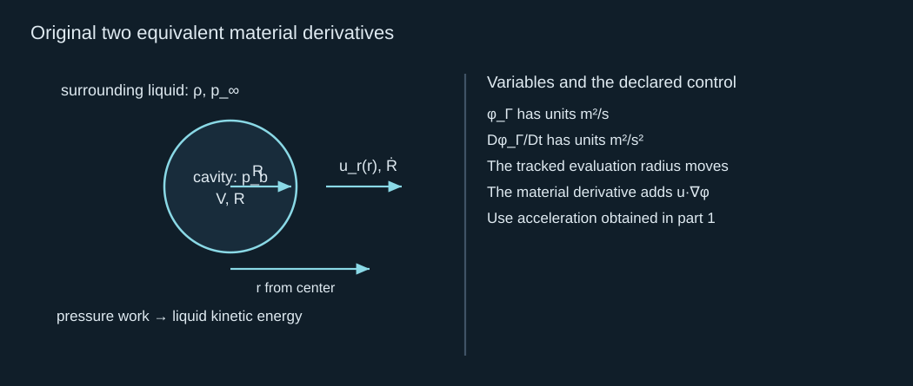
Original two equivalent material derivatives
两个等价材料导数的原始公式
Surface potential is 0.00100 m²/s. The differentiated value is −400 + 700.88 = 300.88 m²/s²; the dynamic value is 200 + 100.88 = 300.88 m²/s². Agreement verifies the pressure, curvature and moving-point signs. A fixed-location derivative omits the convective contribution and would not differentiate the potential sampled by a moving surface point.
表面势为 0.00100 m²/s。直接求导为 −400 + 700.88 = 300.88 m²/s²；动力学形式为 200 + 100.88 = 300.88 m²/s²。两者一致核验了压力、曲率及运动点的符号。固定位置导数省略对流贡献，不能代表运动表面点采样到的势的导数。
3. Impose inlet speed 3 m/s. Calculate exit speed and minimum inlet gauge pressure above exterior gas.
3. 规定入口速度 3 m/s，计算出口速度及高于外部气压的最小入口压力。
Reference 3 · maintained-flow focusing / 参考 3 · 维持流量的聚焦
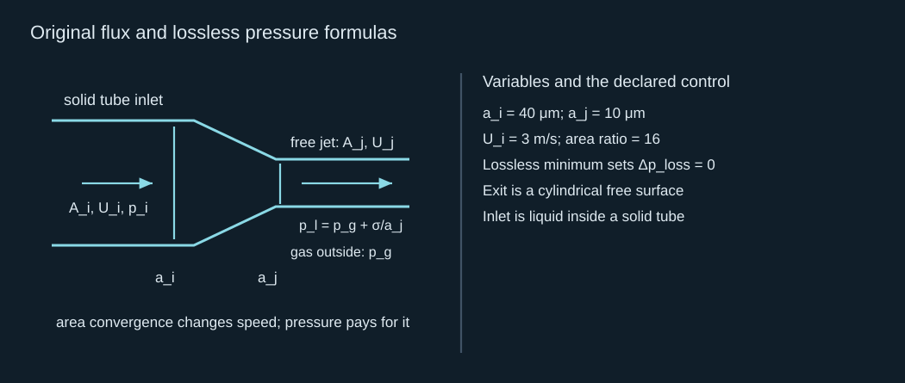
Original flux and lossless pressure formulas
流量与无损压力的原始公式
Exit speed is 48 m/s. The kinetic pressure requirement is 1,147,500 Pa, and exit capillary pressure is 7,200 Pa. Their sum is 1,154,700 Pa = 1.1547 MPa. The required supply exceeds 0.20 MPa, so the same prescribed inlet speed is incompatible with that smaller pressure budget.
出口速度为 48 m/s，动能压力需求为 1,147,500 Pa，出口毛细压力为 7,200 Pa，总计 1,154,700 Pa = 1.1547 MPa。所需供给超过 0.20 MPa，因此相同规定入口速度与该较小压力预算不相容。
4. Instead impose inlet pressure 0.20 MPa above exterior gas. Solve for both speeds.
4. 改为规定入口比外部气压高 0.20 MPa，求解两个速度。
Reference 4 · pressure controls the resulting flux / 参考 4 · 压力控制所得流量
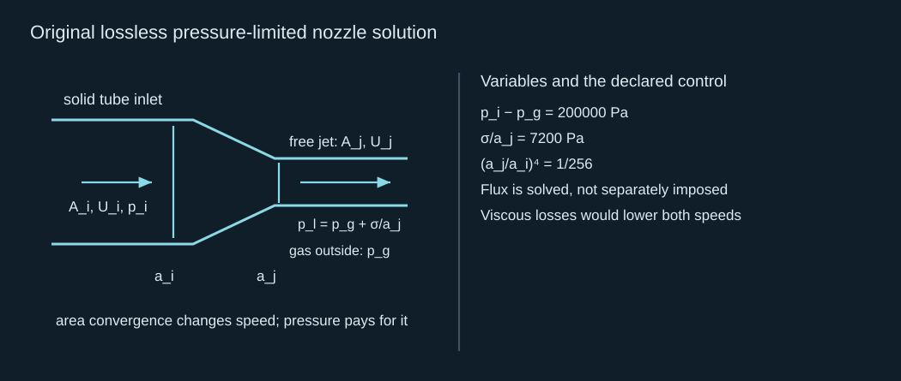
Original lossless pressure-limited nozzle solution
无损限压喷嘴解的原始公式
The solved exit speed is 19.6752 m/s and inlet speed is 1.22970 m/s. The volume flux is 6.18113×10⁻⁹ m³/s. Continuity and pressure work now agree. This is a steady nozzle benchmark; a cavity-driven transient requires the evolving-interface or full unsteady model.
解得出口速度 19.6752 m/s、入口速度 1.22970 m/s，体积流量为 6.18113×10⁻⁹ m³/s。连续性与压力做功现在一致。这是稳态喷嘴对照；腔体驱动瞬态需要演化界面或完整非定常模型。
5. Specify the minimum data for predicting a freely formed jet and identify the event at which this incompressible interface model must be extended.
5. 指明预测自由形成射流的最少数据，并指出何时必须扩展该不可压缩界面模型。
Reference 5 · a closed formation problem / 参考 5 · 闭合的形成问题
Original bulk, kinematic and dynamic formation equations
体内、运动学及动力学形成的原始方程
Supply initial cavity and outer-surface geometry, initial flow, gas closure, forcing history and every boundary condition. Solve normal velocity and evolve surface potential/shape. Jet piercing requires handling reconnection or toroidal topology; fast impact and pressure-wave loading require a compressible model. No generic gain coefficient substitutes for those inputs. A specified steady nozzle is already solved here; an actual transient stamp geometry has not been numerically solved by authoring this chapter.
给出初始腔体及外表面几何、初始流动、气体闭合、驱动历程及全部边界条件。求解法向速度并推进表面势／形状。射流穿透需要处理重连或环状拓扑；快速冲击及压力波载荷需要可压缩模型。通用增益系数不能替代这些输入。本章已经求解指定稳态喷嘴，但撰写本章并未数值求解实际瞬态印章几何。
6. In the 120-degree sector control, verify the harmonic boundary conditions and calculate the velocity gain from outer radius to one percent radius. Does its singular limit imply infinite energy?
6. 在 120 度扇区对照中，核验调和边界条件，并计算外半径到百分之一半径的速度增益。奇异极限是否意味着无限能量？
Reference 6 · spatial focusing with a finite integral / 参考 6 · 空间聚焦与有限积分
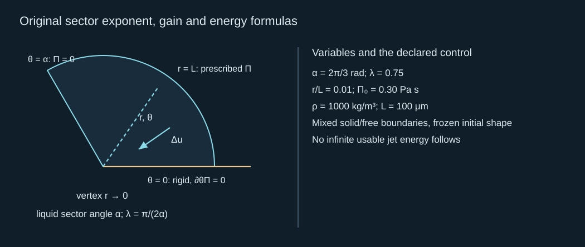
Original sector exponent, gain and energy formulas
扇区指数、增益及能量的原始公式
The angular derivative vanishes at zero angle and the cosine vanishes at the free side. The gain is 3.16228, taking 2.25 m/s to 7.11512 m/s. The energy integral near the vertex is integrable because its radial power is greater than −1; total per-depth energy is 3.53429×10⁻⁵ J/m. Regularization and subsequent moving-interface dynamics determine a real jet.
零角处角向导数为零，自由边处余弦为零。增益为 3.16228，使 2.25 m/s 升到 7.11512 m/s。顶点附近能量积分的径向幂大于 −1，因此可积，总单位深度能量为 3.53429×10⁻⁵ J/m。正则化及后续运动界面动力学决定真实射流。
Brief mastery response
简短掌握回答
Explain why area convergence alone cannot predict an attainable jet speed. Connect pressure impulse, the dynamic interface condition and a declared energy budget; distinguish an internal re-entry jet from exterior ejection.
解释为什么单凭面积汇聚不能预测可达射流速度。连接压力冲量、界面动力学条件及声明能量预算，并区分内部回入射流与外部喷出。
Reference-assisted calculations are welcome. Send one short explanation in your own words; preparation of this page does not mark the chapter solved. Earlier accepted records retain their credit.
允许参照答案完成计算。请用自己的话提交一段简短解释；备妥本页不代表本章已完成。此前已接受记录的学分保留。